Hisayama
Hisayama · Fukuoka
Hisayama
Highlighted on the Fukuoka map.
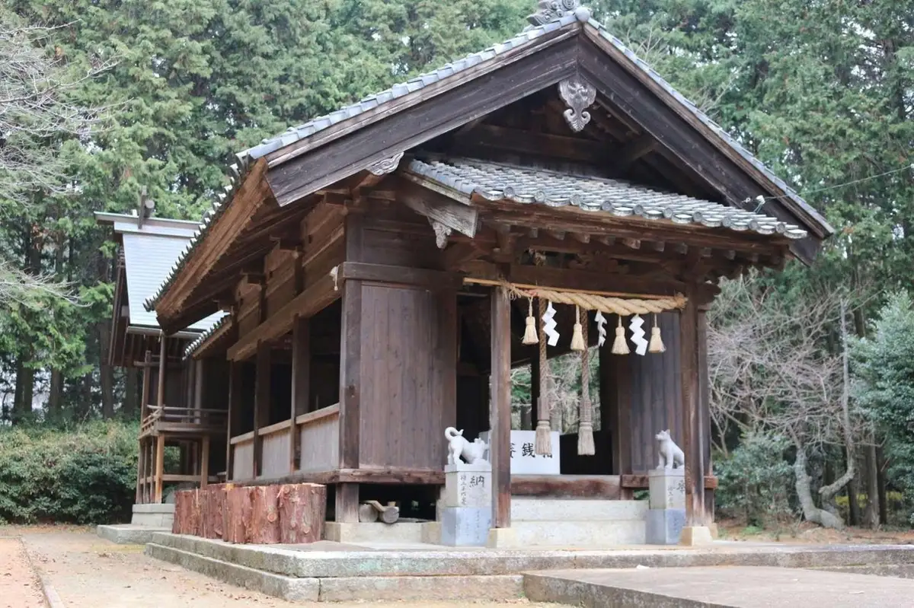
Dining
御料理 茅乃舎
Goryou Ri Me No Sha
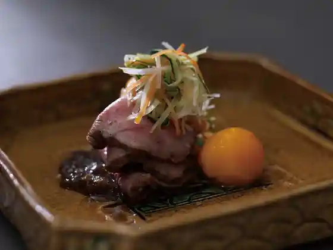
朝食イタリアン キッキリッキー
Choushoku Itarian Kikkirikkii
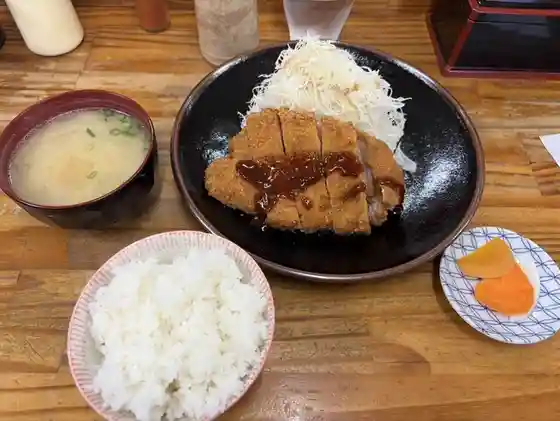
とんかつ亭ひさやま
Tonkatsu Tei Hisayama
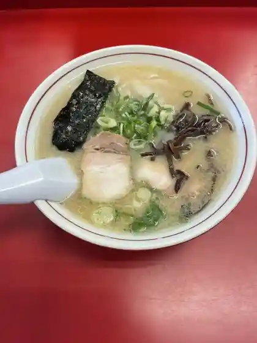
元祖 志免三洋軒 久山店
Ganso Shime Sanyou Ken Hisayama Mise
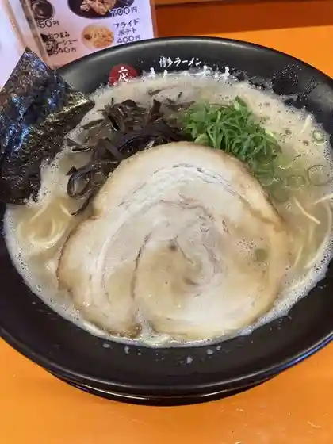
羽釜豚骨二代目けんのすけ 久山店
Hagama Tonkotsu Nidaime Kennosuke Hisayama Mise
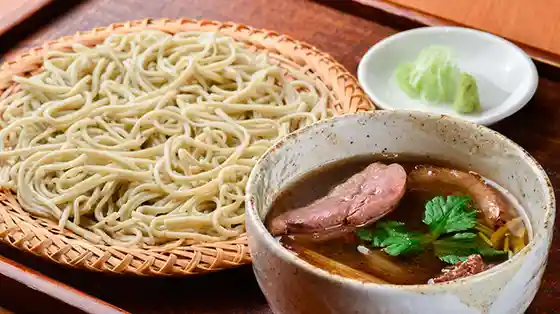
鯨家 いすず庵
Kujira Ie Isuzu Iori
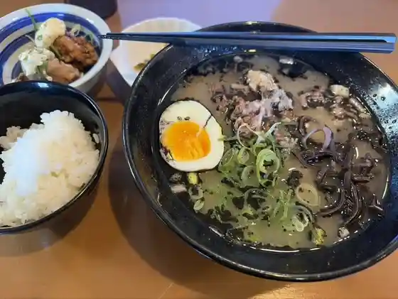
居酒屋 べこや
Izakaya Bekoya
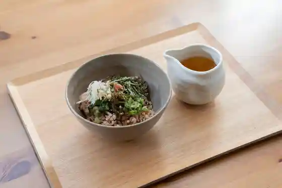
玄米おにぎり ひとやすみ
Genmai Onigiri Hitoyasumi
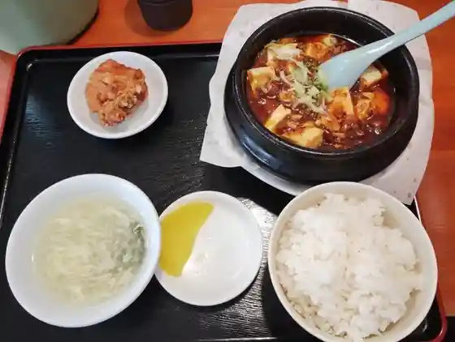
中華料理 福源
Chuukaryouri Fuku Gen
ひさやま寿司
Hisayama Sushi
リトルダイナージャック
Ritorudainaajakku
牧のうどん 久山店
Maki Noudon Hisayama Mise
スタミナ鉄板 博多アイアンマン 久山店
Sutamina Teppan Hakata Aianman Hisayama Mise
廻鮮すし 玄海丸 トリアス久山店
Kaisen Sushi Genkai Maru Toriasu Hisayama Mise
カジュアルレストラン Sui
Kajuaruresutoran Sui
讃岐うどん 空海
Sanuki Udon Kuukai
茶舎
Cha Sha
お食事の店 小道
O Shokuji No Mise Komichi
たいら食堂
Taira Shokudo
BASE RADICE VERDE
BASE RADICE VERDE
コストコ 久山倉庫店
Kosutoko Hisayama Souko Mise
TAKENO FARM トリアス久山店
TAKENO FARM
cafe letter
cafe letter
久原本家 総本店
Hisahara Honke Souhonten
Fumi
Fumi
いちしろ
Ichishiro
里山サポリ farm to kitchen
farm to kitchen
トラットリアピッコロ
Torattoriapikkoro
チャイニーズ キッチン 大家好 トリアス店
Chainiizu Kitchin Ooya Kou Toriasu Mise
このこのぱん
Konokonopan
たこばやしトリアス久山
Takobayashi Toriasu Hisayama
豚屋食堂 トリアス久山店
Buta Ya Shokudo Toriasu Hisayama Mise
牡蠣小屋 恵比寿丸
Kaki Koya Ebisu Maru
麺屋小戎
Men Ya Shou Juu
暖暮 トリアス久山店
Dan Kure Toriasu Hisayama Mise
きんぴら食堂
Kinpira Shokudo
SACHiA Hisayama TERRACE
SACHiA Hisayama TERRACE
やすこうち農園
Yasukouchi Nouen
石焼ビビンバ専門店アンニョン 福岡トリアス久山店
Ishiyaki Bibinba Senmonten Annyon Fukuoka Toriasu Hisayama Mise
うえすたん トリアス久山店
Uesutan Toriasu Hisayama Mise
ヘルシージュース
Herushiijuusu
マクドナルド 久山トリアスモール店
Makudonarudo Hisayama Toriasumooru Mise
生鮮びっくり市場 フードウェイトリアス久山店
Seisen Bikkuri Shijou Fuudoueitoriasu Hisayama Mise
珈琲豆屋焙煎工場
Koohii Mameya Baisen Koujou
よりみち
Yorimichi
ビスヌ トリアス久山店
Bisunu Toriasu Hisayama Mise
福岡久山食堂
Fukuoka Hisayama Shokudo
ケンタッキーフライドチキン トリアス久山店
Kentakkiifuraidochikin Toriasu Hisayama Mise
サーティワンアイスクリーム トリアス久山店
Saateiwan'aisukuriimu Toriasu Hisayama Mise
ラーメン すずめ
Raamen Suzume
タリーズコーヒー トリアス久山店
Tariizukoohii Toriasu Hisayama Mise
ジョリーパスタ トリアス久山店
Joriipasuta Toriasu Hisayama Mise
ポムの樹Jr. トリアス久山店
Pomu No Ki Jr . Toriasu Hisayama Mise
焼肉ウエスト 久山店
Yakiniku Uesuto Hisayama Mise
割烹 桂川
Kappou Katsuragawa
花の家
Hana No Ie
シャトレーゼ トリアス久山店
Shatoreeze Toriasu Hisayama Mise
あっぴーパン
Appii Pan
ミスタードーナツ トリアスモールショップ
Misutaadoonatsu Toriasumoorushoppu
Juice Bar Delight
Juice Bar Delight
ほっともっと 久山店
Hottomotto Hisayama Mise
久山ちゃんぽん ひでや
Hisayama Chanpon Hideya
喫茶田園
Kissa Den'en
久山手羽から
Hisayama Teba Kara
TAKE THE CREPE
TAKE THE CREPE
山の里
Yama No Sato
オルト久山
Oruto Hisayama
コロッケ倶楽部 トリアス久山店
Korokke Kurabu Toriasu Hisayama Mise
久山の牡蠣ハウス 島風
Hisayama No Kaki Hausu Shima Kaze
ひで
Hide
Aコープ 久山店
A Koopu Hisayama Mise
セブンイレブン 久山久原店
Sebun'irebun Hisayama Hisahara Mise
ファミリーマート 久山久原店
Famiriimaato Hisayama Hisahara Mise
LAWSON 糟屋久山店
LAWSON
味処 みよちゃん
Ajidokoro Miyochan
里屋
Sato Ya
ファミリーマート トリアス久山店
Famiriimaato Toriasu Hisayama Mise
ユナイテッド・シネマ トリアス久山
ユナイテッド・シネマ トリアス久山
ファミリーマート 福岡久山店
Famiriimaato Fukuoka Hisayama Mise
Kayanoya
Kayanoya
Udon to Torimeshi Fukusuke
Udon to Torimeshi Fukusuke
Trattoria Piccolo
Trattoria Piccolo
Tempura no Hirao Hisayama
Tempura no Hirao Hisayama
Shinshusobadokoro Musashian
Shinshusobadokoro Musashian
Maidookini Shokudo Fukuoka Hisayama
Maidookini Shokudo Fukuoka Hisayama
Vegan Restaurant Sui
Vegan Restaurant Sui
Brown Rice Ball Hitoyasumi
Brown Rice Ball Hitoyasumi
San Yoken Hisayama
San Yoken Hisayama
Genkaimaru Toriua Hisayama
Genkaimaru Toriua Hisayama
Cafe Dining Cococina
Cafe Dining Cococina
Marugame Seimentorius
Marugame Seimentorius
Hakata Ramen 2daimen Kennosuke Hisayama
Hakata Ramen 2daimen Kennosuke Hisayama
Beef King
Beef King
Hyakusai Torius Hisayama
Hyakusai Torius Hisayama
Ippuku Ramen Hisayama
Ippuku Ramen Hisayama
Katsudon Honke Teppeichan
Katsudon Honke Teppeichan
Indian Restaurant Bishnu
Indian Restaurant Bishnu
Ramen Danbo Torius Hisayama
Ramen Danbo Torius Hisayama
West Udon Hisayama
West Udon Hisayama
Dopo since2013 Torius Store
Dopo since2013 Torius Store
Sama Fukuoka Torius
Sama Fukuoka Torius
Tonkotsu Ramen Koeimon
Tonkotsu Ramen Koeimon
Croquette Club Toriasu Hisayama
Croquette Club Toriasu Hisayama
Sweet Basil
Sweet Basil
Kentucky Fried Chicken Toriasu Hisayama
Kentucky Fried Chicken Toriasu Hisayama
McDonald s Kuyama Toriasumouru
McDonald s Kuyama Toriasumouru
Kubara Honke Sohanten
Kubara Honke Sohanten
Chinese Kitchentajihaotorius
Chinese Kitchentajihaotorius
Chinese Kitchen Tar Jia Hao
Chinese Kitchen Tar Jia Hao
Dreams and Pastorius Hisayama
Dreams and Pastorius Hisayama
Kaio Torius
Kaio Torius
Genkido
Genkido
Cafe Fadietoriasu Hisayama
Cafe Fadietoriasu Hisayama
Ajiyoshi
Ajiyoshi
Chicchi Richi
Chicchi Richi
Ryu No Hane Hisayama
Ryu No Hane Hisayama
Kakigoya Ebisumaru Torius Hisayama
Kakigoya Ebisumaru Torius Hisayama
Hanakeshiki
Hanakeshiki
Kurume Ya Ramen
Kurume Ya Ramen
Mountain of Dumplings Eight Pastorius Hisayama
Mountain of Dumplings Eight Pastorius Hisayama
Ginshiro Torius Branch
Ginshiro Torius Branch
Fu Kitani Hisayama
Fu Kitani Hisayama
Hana Izumi
Hana Izumi
Miss Mamma
Miss Mamma
Mukashinotonkotsuramen Shojikiya
Mukashinotonkotsuramen Shojikiya
Chinchikurin
Chinchikurin
Mendaikan Kijuro
Mendaikan Kijuro
Sights
Mikazuki Yama
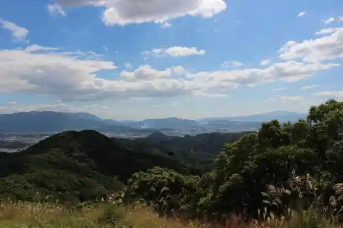
Hisahara Honke So Main Shop
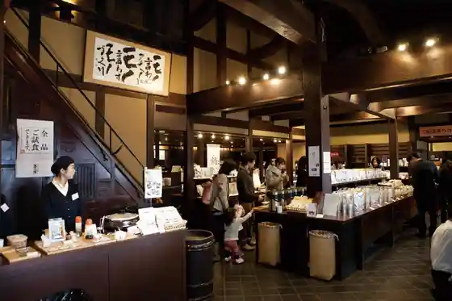
Toriasu
Ino Amaterasu Ko Dai Shrine
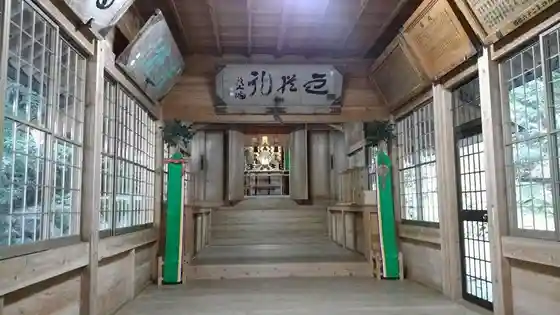
Ino Kawa
Ino Park
Hakusan Shrine (Hisayama)
Keimangorufu Club
Ino Dam
Foresutoadobencha Hisayama
Kokushi Ato Kubi Razan Iseki
Asahi Ryokuken Hisayama Tenisu Kurabu
Hisahara Dam
Fukuoka Hisayama Sumoba
Mikazuki Keiryu Park
Tomi Gaku
Otsu Miya Shrine
Hisahara Kawa
Wakamiya Hachiman Shrine (Hisayama)
Genseki Hitsugi Gun
Akasaka Greenway
Ue Hisahara Hakusan Jinja Shishi Mai
Jaku Hachiman Shrine
Suga Shrine (Hisayama)
Itsuki
Hisayama Town Hall no Heiji Kankei Bunsho
Shin Ken Greenway (Hisayama)